rviz2 三维可视化：机器人的"上帝视角"
RViz（Robot Visualization，机器人可视化）在 ROS 2 里的名字就是 rviz2——机器人开发的三维"取景器"：订阅激光点、TF 坐标轴、机器人模型、规划路径这些"空间话题"，实时画成三维画面，让 echo 里滚动的数字变成一眼看懂的图形。应用场景贯穿开发全线：装配阶段看 URDF 模型转没转、调试阶段看雷达点云装没装正、导航阶段看规划路径穿不穿墙，bag 回放验收也以它为统一窗口。本课从 Fixed Frame 讲到七大核心 Display。
目标本课学完，你应该能做到
能阐述 rviz2 基于 OGRE 渲染引擎与 Display 插件体系的架构——为什么需要"以坐标系为容器、以 Display 为图层"的三维可视化，以及 Fixed Frame 的核心地位。
能正确设置 Fixed Frame，并依次添加配置 RobotModel、TF、LaserScan、PointCloud2、Image、Path、Marker 七种 Display。
能用 rviz2 -d <config> 加载配置，调整后通过 File → Save Config 保存，实现调试环境一键复现。
在后续 bag 回放、URDF 模型验证、仿真可视化中，能把 rviz2 作为标准三维前端按需配置。
难点：理解 rviz2 只是"消费者"——没有 TF 和
/robot_description 的发布者，它什么都画不出来。01问题引入：机器人眼中的世界长什么样
topic echo 打出来的一串串数字（浓度、温度、坐标）、消息头里的 frame_id——这些抽象数据本章要变成看得见的图形。rviz2 就是所有话题数据的"显示器"，也是后面 TF、URDF、导航的可视化舞台。echo /scan 一屏数字：[2.31, 2.29, 2.35...]——你知道前方有障碍，但不知道形状
激光点云、机器人模型、路径轨迹，本质都是 3D 空间的点和形状
导航规划的路径对不对？模型装配的关节转没转？一眼看穿 vs 十分钟 echo
rviz2 把消息"画"进三维视口——调试 IMU/雷达/TF/模型的统一窗口
02先看现象：一条命令看见机器人
不写一行代码，两条命令 + 四个动作把"话题里的数字"变成三维画面——照做 2 分钟内看到结果。画面为什么能出来，03 节拆原理；每步的细节在 04 节。
source /opt/ros/humble/setup.bash source ~/ros2_ws/install/setup.bash
ros2 launch car1_description display.launch.py
生产者 ×2 + 消费者 ×1（哪 3 个，04 节用 node list 证明）
关节滑块窗 + rviz2 主窗：Grid 地面、小车模型、TF 坐标轴已就位
左键拖拽旋转、滚轮缩放——模型随鼠标转，说明画面是实时渲染的
动一个关节滑块 → rviz 里对应部件跟着转，坐标轴同步移动
Ctrl+C 一次，三个节点一起干净退出——这就是"一键起停"

03原理讲解
Fixed Frame 决定"上帝站在哪"
它回答"相机架在哪个坐标系上看世界"。设成 map：整张地图静止，机器人在图上移动；设成 base_laser：机器人钉在原点，墙壁绕着车动。所有数据都会被 TF 变换到这个系再画。
雷达点云 frame_id=laser → 沿 laser→base_link→odom→map 链逐级算到 Fixed Frame。链上任何一环断裂，该 Display 立即报黄 "Transform [sender=unknown]"——这就是 rviz 满屏黄字的第一大原因。
默认每秒渲 30 帧。它只消费数据不驱动系统：把 Fixed Frame 改掉、关掉某个 Display，被调试的机器人毫发无损——放心折腾。
② 随配置带入：
rviz2 -d ~/ros2_ws/install/car1_description/share/car1_description/rviz/car1.rviz（这份配置里 Fixed Frame = base_footprint）；导航配置 navigation.rviz 里是 map。③ 裸启默认：
rviz2 无配置时默认 map。回放联调时再加 --ros-args -p use_sim_time:=true（用法详见 EXP-11）。| Fixed Frame 设成 | 画面效果 | 典型用途 |
|---|---|---|
| map | 地图静止，机器人在地图中移动 | 导航调试（默认值就是它） |
| odom | 忽略全局定位漂移，看相对里程 | 检查里程计平滑度 |
| base_link / base_laser | 车体钉在原点，环境绕着车动 | 检查单传感器安装与标定 |
| 某个不存在的 frame | 全屏黄 Warning，画面冻结 | 不用管——这就是下节诊断台要抓的症状 |
看图学参数：对照实拍逐项精讲
对照图 15-1（display.launch.py 启动实拍）：rviz2 主窗左侧面板分两段——上半 Displays 回答"画什么"，下半 Views 回答"从哪看"。下面按面板顺序把常用参数讲清，图中数值即当前 car1.rviz 配置的实测值。
| 参数 | 图中值 | 含义 |
|---|---|---|
| Fixed Frame | base_footprint | 全局观测基准系——所有 Display 的数据先经 TF 变换到这个系再渲染。上一小节的"灵魂参数"；车模配置用 base_footprint，导航配置换 map |
| Background Color | 48, 48, 48 | 视口背景色 RGB（深灰，长时间盯屏不刺眼） |
| Frame Rate | 30 | 目标渲染帧率（帧/秒）。只决定 rviz 自己刷新多快——不驱动、不加速、不拖慢被测系统 |
| Global Status | Ok（绿） | 全局健康灯：变红/黄说明有 Display 的 TF 断链或话题没数据，展开红黄条目看是谁报的 |
| 参数 | 图中值 | 含义 |
|---|---|---|
| Reference Frame | <Fixed Frame> | 网格钉在哪个坐标系；跟随 Fixed Frame，也可改成 map/base_link 单独挪 |
| Plane Cell Count × Cell Size | 10 × 1 m | 每边 10 格、每格 1 米 → 铺出 10 m×10 m 地面，车开到第几格一眼估出距离 |
| Normal Cell Count | 0 | 法向刻度支线数量；0=只画平面网格 |
| Line Style | Lines | 网格画法：Lines 细线 / Billboards 圆棒（远看更清楚）/ Squares 色块 |
| Color · Alpha · Plane · Offset | 160,160,164 · XY · 0,0,0 | 线颜色与不透明度；网格平面（XY=水平地面/XZ=立面）；整体平移量 |
| 参数 | 含义 |
|---|---|
| Status: Ok（绿） | 三方协作全通的标志：URDF 读到 + TF 链通 + /joint_states 在更新——任一环断这里就变红，按上一小节"四步排查"走 |
| Description Topic | 模型来源（默认 /robot_description）；也可切 File 直读 .urdf 文件 |
| Visual Enabled / Collision Enabled | 显示外观网格还是碰撞简化体——排查干涉时关 Visual 开 Collision |
| Alpha · TF Prefix | 整机半透明度（0~1，看内部结构）；多车同场时给 link 名加前缀去重 |
| 参数 | 图中值 | 含义 |
|---|---|---|
| Type | Orbit | 视角类型：Orbit 环绕球（默认，绕目标转）/ ThirdPersonFollower 跟随 / Follow / Axes 等；旁边 Zero 一键归零 |
| Near Clip Distance | 0.01 | 近裁剪面（米）：比它更近的几何体被裁掉——凑近模型出现"破面/消失"就调大它 |
| Target Frame | base_link | 相机注视目标跟随的坐标系：选 base_link → 车动相机跟着动；选 <Fixed Frame> → 相机钉死在基准系 |
| Distance | 1.5 | 相机到焦点的距离（米）——滚轮缩放改的就是它 |
| Yaw · Pitch | 0.4 · 0.65 | 水平方位角 · 俯仰角（弧度）——左键拖拽改的就是它 |
| Focal Point | 0, 0, 0.05 | 焦点相对 Target Frame 的偏移（本图抬高 5 cm 对准车身中心） |
| Focal Shape Size + Fixed Size | 0.05 · ✓ | 焦点辅助小球的显示大小；勾 Fixed=像素恒定不随远近变 |
| Save / Remove / Rename / Reset | — | 视角方案管理：常用机位存盘复用；Reset 恢复默认 = 视角迷路的第二保险（第一保险是右键 → Reset View） |
七大 Display 逐个拆
默认就有的网格地面，提供空间标尺。迷失视角时右键 → Reset View 一键回正——这是新手最该记的肌肉记忆。
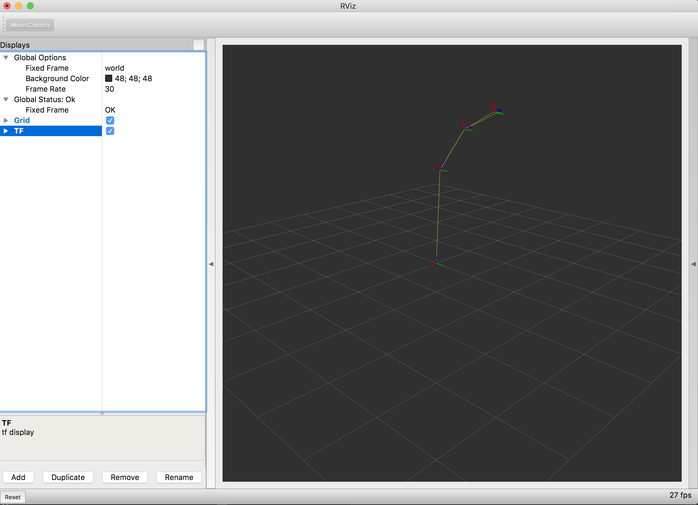
Add → TF 自动订阅 /tf 与 /tf_static，RGB 三轴画出每个坐标系，Show Names 显示名字。断链=某段坐标轴消失，比 view_frames 生成 PDF 实时得多——PDF 是快照，TF 图层是直播。

读 Description Topic（/robot_description）画网格式车体。需要三方协作：URDF 定结构 → robot_state_publisher 按 /joint_states 算各 link 变换 → rviz 渲染。调试可关 Visual 只留 Collision、调 Alpha 半透明看内部。
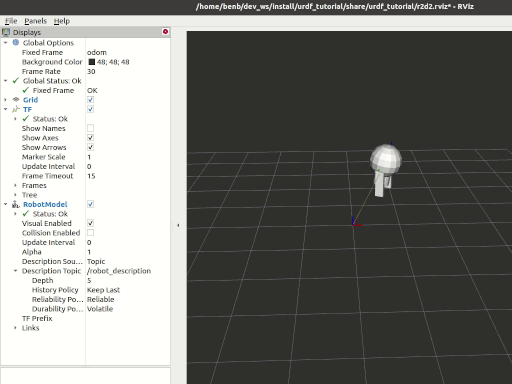
Topic 选 /scan，Size 约 0.03。极坐标点变换成 3D 空间点，Color Transformer 按距离映射颜色（近红远绿）。前提：frame_id 必须在 TF 链上，否则黄字。
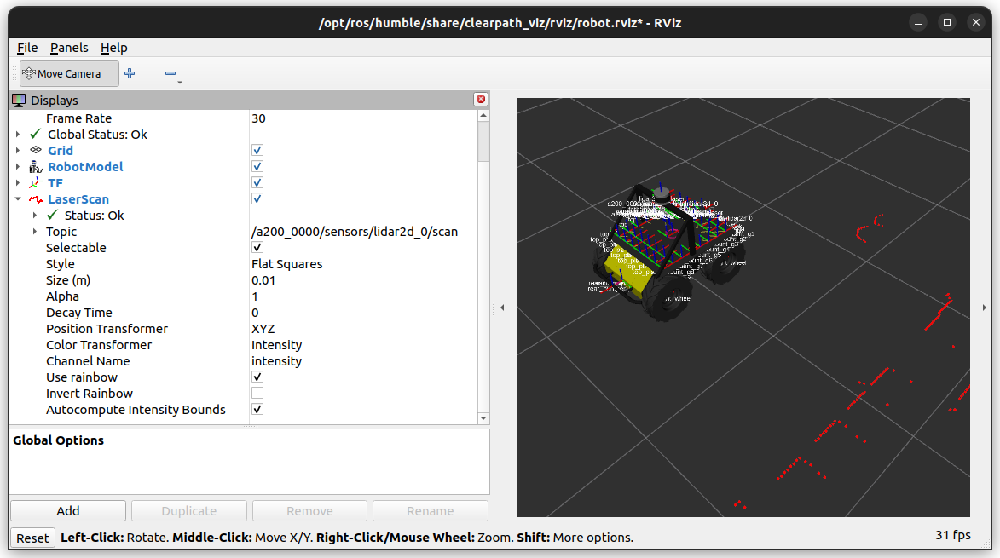
深度/视觉相机的点云。fields 描述每点的打包结构，RGB 常按 FLOAT32 打包——结构对不上颜色就乱。数据量大时调降 Point Size、抽稀订阅。
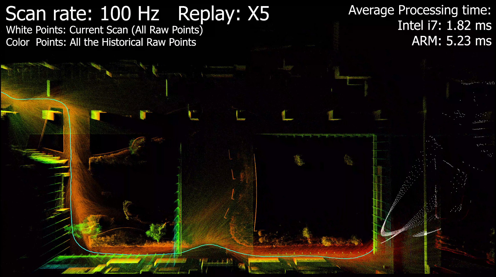
nav_msgs/Path 折线，如正弦的 /plan。算法对不对，曲线一眼定：折角突变=规划抽风，路径穿墙=代价地图有洞——比读坐标数组快两个数量级。
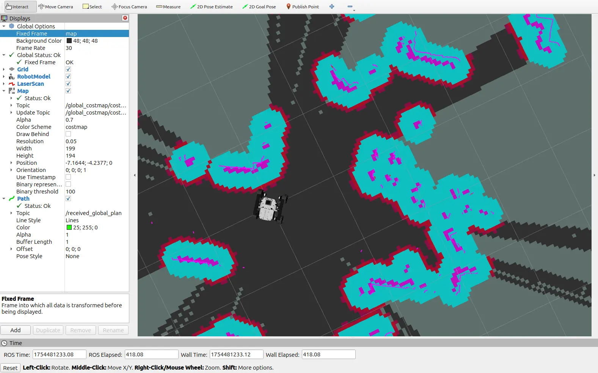
万能便签：SPHERE/ARROW/TEXT_VIEW_FACING/Cube/LineStrip 形状，action 分 ADD/DELETE/MODIFY，ns+id 定位实例。想在画面里标"目标点 3"？发个文字 Marker 即可，不用给 rviz 写插件。
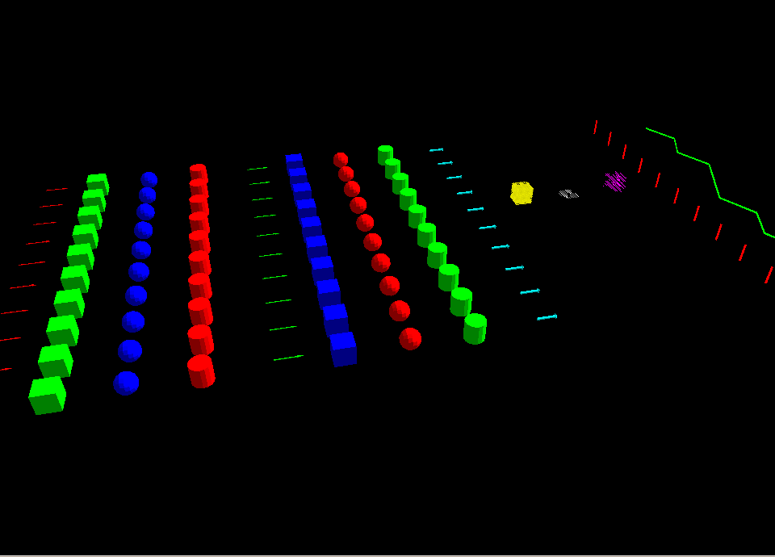
File → Save Config As 导出全部 Display 设置；下次 rviz2 -d xxx.rviz 一键还原。团队共享后，新人开箱即是同款调试视图——配置是工程资产，进 git。
ros2 topic echo /robot_description --once（URDF 在不在）→ ② ros2 node list | grep state_publisher（rsp 活没活）→ ③ ros2 topic echo /joint_states（关节数据来没来）→ ④ Fixed Frame 是否与 link 树根连通。外加 check_urdf 校验模型语法。
04实验步骤
工程化顺序：先看全景（图 15-2，动了哪些文件与话题）→ 再看三节点协作流程（图 15-3）→ 最后按步骤动手、对照配置与命令。
rviz 黑屏诊断台
启动与图形环境
# 标准启动（默认 Fixed Frame=map，Display 全手动添加） $ rviz2 # 携带已保存配置启动（本课实操用的就是这条路径） $ rviz2 -d ~/ros2_ws/install/car1_description/share/car1_description/rviz/car1.rviz # 用 launch 起（自动带上本车配置，推荐） $ ros2 launch car1_description display.launch.py # 车模型 + 关节滑块 $ ros2 launch car1_navigation rviz_navigation.launch.py # 导航视图 # 边用边查配置路径（不用记死） $ ros2 pkg prefix car1_description $ ls $(ros2 pkg prefix car1_description)/share/car1_description/rviz/ # 与导航一起跑时，让 rviz 也认仿真时钟（配合 EXP-11 的 --clock 回放） $ rviz2 --ros-args -p use_sim_time:=true # 嵌入式/远程：先确认 GPU 驱动支持 OpenGL，再 ssh -X 转发 $ glxinfo | grep "OpenGL renderer" # 看是不是硬件渲染（如 Mali-G52） $ ssh -X iflytek@10.1.134.9 && rviz2
rviz2 -d car1.rviz，然后发现：画面全黑 / 车不显示 / ros2 topic list | grep tf 是空的 / tf2_echo base_footprint base_link 一直报
Invalid frame ID "base_footprint" ... frame does not exist。这不是 rviz 坏了，也不是 tf2_echo 的 bug——因为 TF 树和
/robot_description 是 robot_state_publisher 发的，你只开了显示窗口，没人生产数据，rviz 自然是空的。✔ 正确姿势：永远用 launch 一次把生产者和 rviz 都起好——
ros2 launch car1_description display.launch.py
它同时启动
joint_state_publisher_gui + robot_state_publisher + rviz2，才有东西可看。
一句话记住：TF 永远要问"谁在发"——只有
robot_state_publisher（配合 joint_state_publisher）在跑，base_footprint 才存在。
跑起本车模型，看懂 TF 坐标树
不写一行代码——直接用本机功能包 car1_description（小车 C1 的模型描述包）把真车"画"进 rviz2。全程 8 步，每步都有确定的预期结果，照做即可。
拿到功能包的真实安装路径，后面 -d 加载的 rviz 配置文件就在它的 rviz/ 子目录里：
source /opt/ros/humble/setup.bash source ~/ros2_ws/install/setup.bash ros2 pkg list | grep car1_description ros2 pkg prefix car1_description ros2 pkg executables car1_description # 预期无输出：本包只有 launch，没有可执行文件
✔ 若 pkg list 查不到，说明包没编译——先回 EXP-04 用 colcon build 编译。
这个 launch 会同时启动 三个节点：关节状态 GUI、机器人状态发布器、rviz2 本体。理解它，就知道"画面上的车是谁画出来的"：
ros2 pkg prefix car1_description # 复用它拿到 share 路径 cat /home/iflytek/ros2_ws/install/car1_description/share/car1_description/launch/display.launch.py
ros2 launch car1_description display.launch.py
✔ 此时 rviz 里应该已经能看到一辆小车模型了（因为 car1.rviz 自动勾了 RobotModel 和 TF）。记住这条命令——它是唯一正确的起法，因为它一次性把"生产者"（robot_state_publisher）和"消费者"（rviz2）都起好了。
打开的本机配置 car1.rviz 内容如下——先认清"哪些是自动加载的"：
# car1.rviz 里的关键设置（本机文件实测） Global Options: Fixed Frame: base_footprint # ← 观测基准 = 车底投影点 Displays: - Grid (Value: true) # 地面网格 - RobotModel (Topic: /robot_description) # 车模型 - TF (Show Names: true, Show Axes: true) # 坐标系轴+名字
# rviz 视口鼠标操作速查
左键拖拽 → 旋转视角（绕着焦点转）
中键拖拽 → 平移视角（整个画面平移）
滚轮 → 缩放（近大远小）
右键短按 → 弹出上下文菜单（Focal Point / Reset View）
视口左上 → 显示当前视角名 "Current View"
下方工具栏 → Interact / MoveCamera / Select 三种工具切换
rviz 的 TF 图层和命令行的 tf2_echo 读的是同一份 /tf 数据。顺序很关键：先查节点和话题（确认生产者活着），再查变换的值。跳过第一步直接 tf2_echo，就是新手最常见的翻车点：
source /opt/ros/humble/setup.bash source ~/ros2_ws/install/setup.bash # ① 先确认生产者：这三个节点必须都在 ros2 node list # ② 再看话题存不存在 ros2 topic list | grep -E "tf|robot_description" # ③ 最后才查变换（前两步没做就查 = 必然报 frame does not exist） ros2 run tf2_ros tf2_echo base_footprint base_link
✔ 若第 ① 步 node list 里没有 robot_state_publisher，说明你只开了 rviz 没开生产者——回第 3 步用 launch 起全套，别怀疑 tf2_echo。
真机踩过的两个坑（这台上实测到的）：
# 坑1：Ctrl+C 杀不干净 tf2_echo（ros2 run 是两层，包装器死了子进程变孤儿，会一直刷同一句报错） pkill -x tf2_echo # 确认 pgrep -x tf2_echo 为空 # 坑2：两个终端的域号必须一致，否则根本不在一个 ROS 图里 echo $ROS_DOMAIN_ID # 终端 1 和终端 2 各查一次
滑动滑块 → 它把关节角发到 /joint_states → robot_state_publisher 重算 TF → rviz 里的模型跟着动。整条链路肉眼可见：
# 不用敲命令，直接拖动滑块窗里的滑条 # 若找不到滑块窗：它可能被 rviz 挡住，从任务栏切换到 joint_state_publisher_gui
回终端 1 按 Ctrl+C 停掉 launch（三个节点一起退出），然后只敲 rviz2——这就是前面警告里说的"只开消费者"：
# 终端 1 按 Ctrl+C 停掉整组 launch（生产者一起没了） rviz2 -d ~/ros2_ws/install/car1_description/share/car1_description/rviz/car1.rviz # 另开终端复现报错： ros2 topic list | grep -E "tf|robot_description" # 空 ros2 run tf2_ros tf2_echo base_footprint base_link
✔ 本节灵魂：rviz2 只是"消费者/显示器"，它的一切都来自话题与 TF。看不动画面时，先查数据源（node list / topic list），别怀疑视图工具。
Segmentation fault (core dumped)——这是 rviz2/Ogre 在 ARM 上退出时的常见崩溃，不影响任何功能，别当成故障去排查。
car1_description）。-bash: $: command not found —— 你把文档里的提示符
$ 一起复制进终端了；$ 不是命令，删掉即可，这行不算错。topic list 输出为空 —— 关键证据：没有发布者，所以没有话题。
tf2_echo 一直 Waiting + frame does not exist —— 同上，TF 树不存在。
开头那行 Waiting 一闪而过 —— 那是启动瞬间的竞态（subscriber 还没建好），紧接着就来数据，属正常，不用管。
ros2_venv 之类的虚拟环境里，C++ 写的 robot_state_publisher 不受影响；但将来跑 Python 节点时要留意 venv 与系统 Python 冲突——ROS2 的 Python 节点依赖系统 rclpy，混用 venv 可能 import 失败。跑 Python 节点前建议 deactivate 后只用 source /opt/ros/humble/setup.bash。
加载导航可视化，一步步看懂地图与雷达
进阶实操——用本机 car1_navigation 功能包的 navigation.rviz 打开导航专用视图。这份配置比上一组实操的 car1.rviz 复杂得多（订阅 12 个图层话题 + 3 个交互话题），正是理解"rviz 图层如何堆出完整导航画面"的最佳样本。
.rviz 文件本质是 YAML。先看清它订阅了哪些话题，心里有数再打开就不会被满屏图层吓到：
ros2 pkg prefix car1_navigation cat /home/iflytek/ros2_ws/install/car1_navigation/share/car1_navigation/rviz/navigation.rviz | grep "Value: /"
预期输出 15 条——先 12 个图层话题：
Fixed Frame = map（不是 base_footprint——那是上一组实操 car1.rviz 的）。② 15 条里只有前 12 条是"图层数据源"，后 3 条是交互工具的话题——数错层数会导致后面排查找错方向。
本机已备好一个只起 rviz 的 launch，专门用来先看界面：
source /opt/ros/humble/setup.bash source ~/ros2_ws/install/setup.bash ros2 launch car1_navigation rviz_navigation.launch.py
✔ 先看到"全空"再看到"点亮"，才知道每一层是被哪个节点喂出来的——这是本章最重要的观察方法。
这一步一次性拉起 bringup（底盘+IMU+EKF）、lidar、localization（map_server + amcl）、navigation_base（Nav2）。地图用默认的 slam_map（本机唯一的地图），不要改成 map_01。
因为终端 1 已经开着 rviz，这里必须用 use_rviz:=false 关掉 launch 自带的第二个 rviz，否则会弹出两个窗口。
source /opt/ros/humble/setup.bash source ~/ros2_ws/install/setup.bash ros2 launch car1_navigation navigation.launch.py use_rviz:=false
/dev/stm32 驱动底盘和舵机。请先把车架起来或确认周围无遮挡——没有 cmd_vel 时车不会走，但舵机控制器会初始化（可能听到舵机上电动作，属正常）。✔ 这就是"图层即诊断"：rviz 里哪层不亮，就说明对应的那个节点/话题有问题——比翻日志快得多。
rviz 画不出东西时，第一件事就是回到命令行确认"数据在不在"。用频率、QoS、内容一眼判断：
ros2 topic hz /scan # 雷达图层：COIN-D6 通常 10Hz 上下（以现场为准） ros2 topic info /map --verbose # 地图图层：QoS 里应有 Durability: TRANSIENT_LOCAL ros2 topic echo /plan --once # 路径图层：派了目标点后才有数据 ros2 run tf2_ros tf2_echo map base_link # 定位图层：map→车体
Durability: TRANSIENT_LOCAL（在 QoS profile: 段内），不是 Durability Policy: Transient Local。②
tf2_echo map base_link 若报 extrapolation / frame 不存在，说明 amcl 还没收敛——先去 rviz 用 2D Pose Estimate 给一个初始位姿，再回来查。navigation.rviz 里确实预装了这三个工具：SetInitialPose(/initialpose)、SetGoal(/goal_pose)、PublishPoint(/clicked_point)。用法就是拖箭头：
# rviz 顶部工具栏两个关键按钮： 2D Pose Estimate → 在地图上按住拖一个箭头 = 告诉 amcl "车大概在这，朝这个方向" 松手后 /initialpose 发出，粒子云立刻向该处聚拢 2D Goal Pose → 拖一个目标箭头 = 给 nav2 派目标 松手后 /goal_pose 发出 → 出现全局路径(绿) + 局部路径(蓝)
# 展开左侧 Displays 面板里的某项，改它的子属性： LaserScan → Topic: /scan · Size (m): 0.03 · Color Transformer: Intensity RobotModel → Alpha: 0.8 # 半透明，能看穿外壳看内部结构 TF → Show Names: true · Marker Scale: 0.3 Map → Color Scheme: map / costmap # 地图配色 Grid → Cell Size: 1 · Plane Cell Count: 20
把调好的视图存成 .rviz（YAML），队友 -d 一键还原——团队排查口径从此一致：
# rviz 菜单：File → Save Config As → 存到包内 config/nav_debug.rviz git add config/nav_debug.rviz git diff config/nav_debug.rviz # 纯 YAML，谁改了哪层一目了然 # 队友复现： rviz2 -d config/nav_debug.rviz
navigation.launch.py 里的 rviz 配置路径是硬编码到源码目录那份（~/ros2_ws/src/xflz_eai_car1/navigation/car1_navigation/rviz/navigation.rviz）。想让它以后默认就用你的配置 → 直接把你的
.rviz 覆盖到那个文件；不想动源码 → 每次手动 rviz2 -d 你的配置.rviz 加载。| 坑 | 症状 | 解法 |
|---|---|---|
| 驱动缺失黑屏 | 启动闪退/纯黑 | glxinfo 查 Mali 等硬件渲染是否就绪，装驱动或换机器 |
| Fixed Frame 不存在 | 全部 Display 黄 Warning | car1.rviz 是 base_footprint、navigation.rviz 是 map——切配置时按对应系统改 Fixed Frame |
| 地图图层空白 | Map 显示但无内容 | 地图用 latched QoS，晚订阅也收得到；先 ros2 topic hz /map 确认 map_server 在发 |
| 路径画不出来 | 发了目标点没绿线 | 先确认 amcl 定位收敛（tf2_echo map base_link 能查到），再确认 planner 节点已启动 |
| 起了两个 rviz | 弹出两个窗口抢资源 | 已手动开 rviz 时，主 launch 加 use_rviz:=false |
| 视角迷失 | 网格和车都找不到了 | 视口右键 → Reset View；仍乱则关掉可疑 Display 逐层二分 |
📸 实操界面速览（6 图）
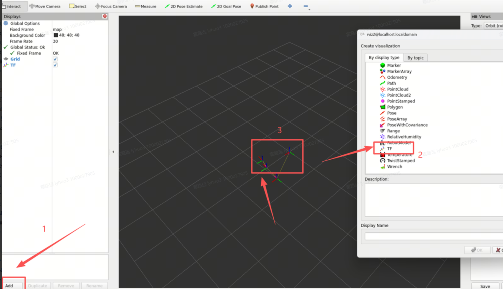
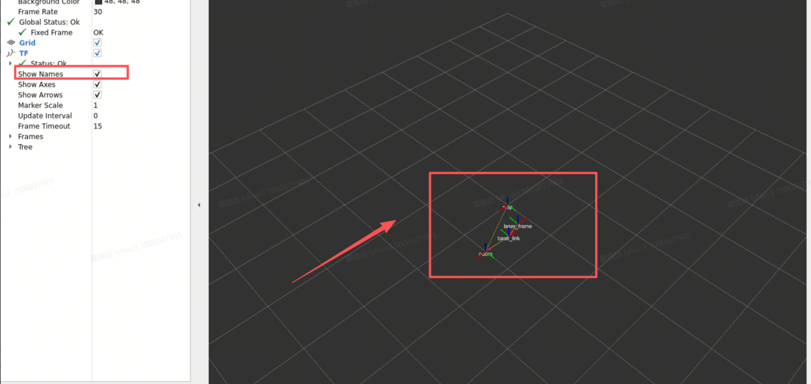
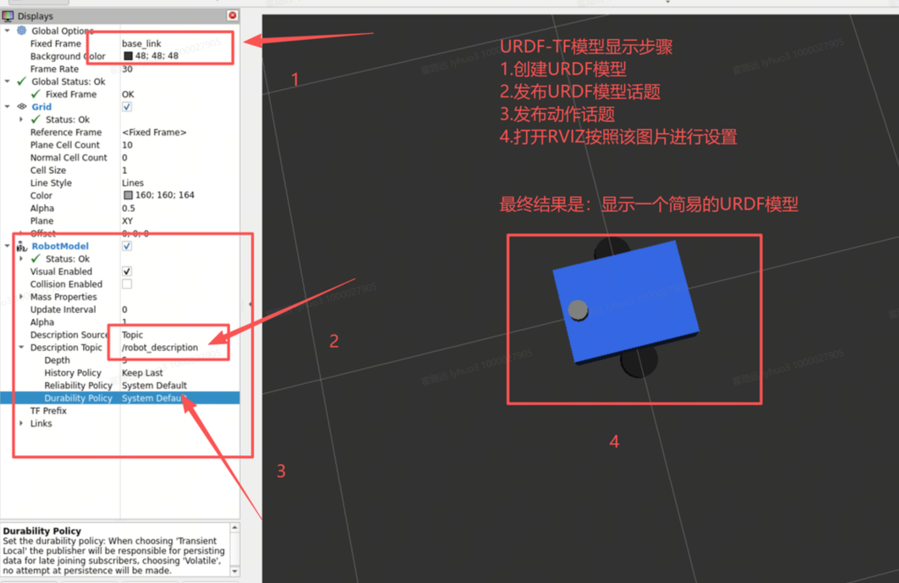
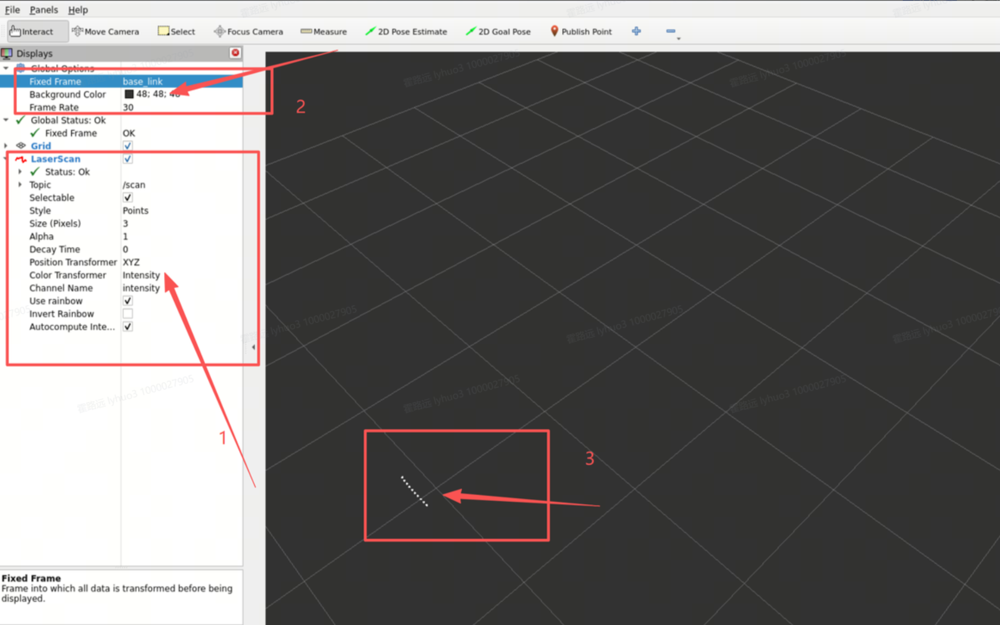
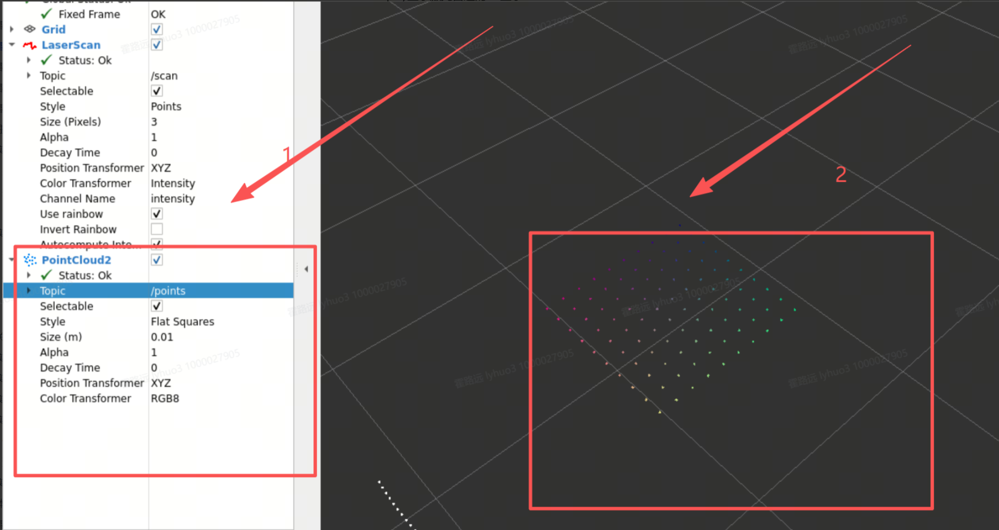
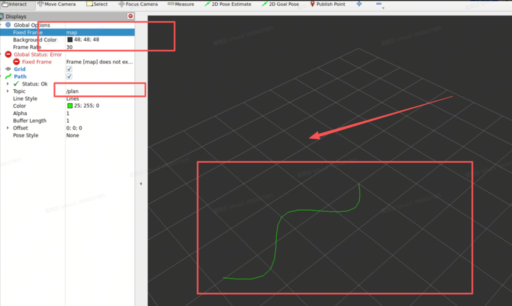
05注意事项与验收
- 验收 1：能口述"消息 → frame_id → TF 链 → Fixed Frame → 绘制"全链路
- 验收 2：实操 A 第 3 步一条 launch 起 display，能在 rviz 里看到本车模型与 TF 坐标轴
- 验收 3：核心考点——实操 A 第 8 步复现"只开 rviz"翻车现场（topic list 空 + tf2_echo 报 frame does not exist），能说清"生产者/消费者"关系，并给出正确起法（launch）
- 验收 4：能说出 car1.rviz（Fixed Frame=base_footprint）与 navigation.rviz（map）的差别
- 验收 5：实操 B 第 3 步观察图层逐个点亮，并用 ros2 topic hz/info 验证至少 3 个图层数据
- 验收 6：完成 2D Pose Estimate 定位收敛 + 2D Goal Pose 出现全局/局部路径
- 验收 7：鼠标操作熟练（左键旋转、中键平移、滚轮缩放、右键复位），并保存 .rviz 配置供队友 -d 复现
06本课总结与验证题
rviz2 只订阅、变换、渲染；异常优先查话题与 TF，而不是怀疑视图工具。
一切数据变换到它才绘制；换帧=换视角，地图系看全局、车体系看感知。
Grid/TF/RobotModel/LaserScan/PointCloud2/Path/Marker 各管一维，按图层隔离故障。
团队共享调试视图，与 launch、params 一样属于可复现工程资产。
base_footprint，模型稳、坐标轴跟着关节动）。把 Fixed Frame 改成 laser（雷达系）后重看画面：小车模型和激光点谁会"绕着动"？为什么？
参考答案与得分点
得分点：①Fixed Frame 变观测基准 → 车体会随关节/外参绕动，激光点云反而钉住不动（在它自己的系里）②一切 Display 都被变换到 Fixed Frame 才绘制，基准变了=换相机架的位置 ③frame 必须真实存在，否则黄字。（①②各 40%，③ 20%）rviz2 -d car1.rviz。预期 ros2 topic list | grep tf 输出是什么？tf2_echo base_footprint base_link 会报什么？指出根因和恢复的正确命令。
参考答案与得分点
得分点：①topic list 无 /tf /robot_description 输出（无发布者）②报Invalid frame ID "base_footprint" ... frame does not exist/一直 Waiting ③根因：只起了消费者 rviz2，生产者 robot_state_publisher 没起 ④恢复：ros2 launch car1_description display.launch.py。（①②④各 25%，③ 25%）
/camera/depth/points，类型 PointCloud2）：写出 Add 的 Display 类型与要改的两个属性；若加上后图层 Status 报黄，先查哪两样？
参考答案与得分点
得分点：①Add → PointCloud2 ②Topic 勾选并设为 /camera/depth/points、Color Transformer/Size 按需 ③黄字两查：header.frame_id 是否在 TF 链上（Add → TF 看该坐标轴在不在）、Fixed Frame 是否写错 ④相机没起时先ros2 topic hz /camera/depth/points 确认有数据。（①②各 30%，③ 40%）
rviz2 -d 加载后满屏黄字。错在哪一步？给出修复与今后避免的做法。
参考答案与得分点
得分点：①调试用的临时 Fixed Frame 被存进了共享配置 ②修复：改回base_footprint 再 Save Config（或 git checkout 恢复）③避免：调试改动另存 nav_debug.rviz，共享配置只存团队约定口径 ④配置是工程资产、进 git 需 review diff（YAML 可读）。（①40%，②20%，③25%，④15%）
参考答案与得分点
得分点：①ros2 bag play xxx --clock 与 rviz2 --ros-args -p use_sim_time:=true 双开关 ②漏开则 rviz 的 now=今天、消息 stamp=录制日 → Transform 时间外推报错/数据不更新 ③Time 面板（Panels → Add New Panel → Time）随回放走=对钟成功。（①②各 40%，③ 20%）